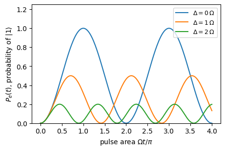
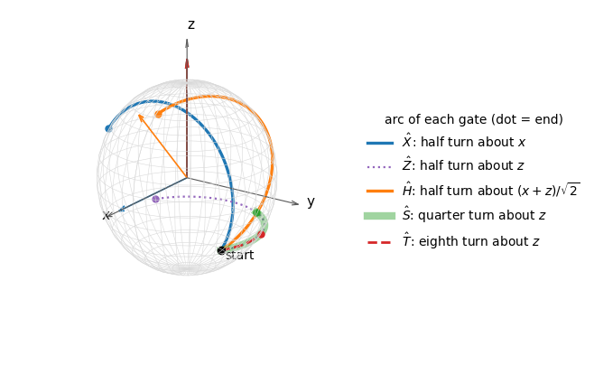
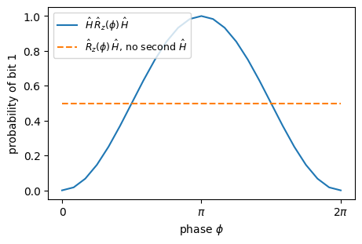
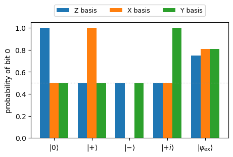
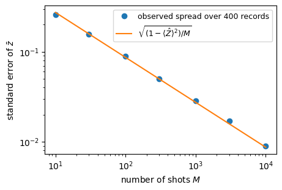

Lab 064. One qubit, measurements and gates as rotations
A qubit is a quantum system whose states form a two-dimensional complex vector space, spanned by two orthogonal states. Many laboratories build such systems, most often from two energy levels of an atom, an ion, a superconducting circuit or a spin. Each qubit is addressed individually with pulses of light, microwaves or voltages. The table lists the main platforms.
platform
the two levels
driven by
coupled through
read out by
trapped ions, atoms
two electronic or hyperfine levels
laser or microwave pulses
shared motion of the ions
state-dependent fluorescence
neutral atoms in optical tweezers
two atomic levels
laser pulses
excitation to strongly interacting Rydberg states
fluorescence imaging
photons
two polarisations or two paths
wave plates, beam splitters
interference and measurement
single-photon detectors
superconducting circuits (transmons)
two lowest levels of an anharmonic electrical oscillator
microwave pulses
capacitors or tunable couplers
a microwave resonator
spins in semiconductor quantum dots, NV centres in diamond
spin up and down, or two spin sublevels
microwave or electric pulses
exchange or magnetic interaction
charge sensing, fluorescence
The platforms differ in their hardware and share one mathematical description. For the atom, the ion and the transmon the two states are a lower and a higher energy level, whereas the two polarisation states of a photon have equal energy. The spin-1/2, the intrinsic angular momentum of an electron whose component along any axis takes only two values, gives the geometric picture used throughout. A register of \(N\) qubits consists of \(N\) such systems that can be driven and measured one by one and made to interact.
In every quantum experiment, and on every quantum computer, we prepare a state, let it evolve under a Hamiltonian switched on for a chosen time, and measure it. Each run returns one bit, 0 or 1. Quantum mechanics predicts the probabilities of the two bits, and we compare them with records of many repeated runs. For one qubit we compute the outcome probabilities, the expectation values of the Pauli observables and the Bloch vector of the state. We then study finite records of shots and the action of every standard gate as a rotation of the Bloch sphere.
The core route runs through Sections 0 to 11. Section 0 compares a qubit with a classical and a probabilistic bit. Sections 1 to 5 introduce the state vector, the Born rule, the phases, the Pauli observables and the Bloch sphere. Sections 6 to 9 show that evolution and every gate are rotations of the Bloch sphere and end with an interference experiment. Measurements in other bases follow in Section 10 and finite records of shots in Section 11. The Euler decomposition of Section 12 lies beyond the core route.
The prerequisites are linear algebra with complex numbers (vectors, matrices, eigenvalues and the conjugate transpose), basic probability and reading Python with NumPy. No course in quantum mechanics is assumed, and every physics word is explained where it first appears. The same objects carry different names in physics, mathematics and computer science.
physics
mathematics
computer science
state \(\lvert\psi\rangle\) of a qubit
unit vector in \(\mathbb C^2\)
memory of one qubit, two complex numbers
state of \(N\) qubits
unit vector in \(\mathbb C^{2^N}=(\mathbb C^2)^{\otimes N}\)
array of \(2^N\) complex numbers
observable
Hermitian matrix
quantity whose average we estimate
time evolution, gate
unitary matrix
reversible operation, an instruction of a program
measurement outcome
eigenvalue, chosen with Born probabilities
random bit, a sample
ket \(\lvert\psi\rangle\), bra \(\langle\psi\rvert\)
column vector, its conjugate transpose
psi, psi.conj()
Four rules, the postulates of quantum mechanics for qubits, define everything that follows. 1. The state of \(N\) qubits is a unit vector in \(\mathbb C^{2^N}\), defined up to a global phase. 2. Between measurements the state is multiplied by a unitary matrix \(\hat U\), the evolution generated by a Hamiltonian, \(\hat U=e^{-i\hat{\mathcal H}t}\) for a constant Hamiltonian (Section 6). 3. A measurement in the computational basis returns the bit string \(b\) with probability \(|\langle b|\psi\rangle|^2\), the Born rule (Section 2), and leaves the state in \(|b\rangle\). 4. The state space of several qubits is the tensor product of their state spaces.
No model is trained, and every number comes from exact state vectors or from simulated measurement records with fixed random seeds.
Code
# JAX in double precision, plotting style and output foldersimport os, json, timeimport numpy as npimport jaximport jax.numpy as jnpfrom jax.scipy.linalg import expmimport matplotlib.pyplot as pltjax.config.update("jax_enable_x64", True) # float64 / complex128 everywhereCDTYPE = jnp.complex128TOL =1e-12# tolerance of the exact checksos.makedirs("figures", exist_ok=True)os.makedirs("classroom_results", exist_ok=True)plt.rcParams.update({"font.size": 10, "axes.titlesize": 10, "figure.dpi": 110})plt.rcParams.update({"pdf.fonttype": 42, "ps.fonttype": 42}) # TrueType fonts: the PDFs embed cleanly in LaTeXFIGSIZE = (4.5, 3.0)started = time.perf_counter()NUMBERS = {} # numbers exported as LaTeX macrosdef save(fig, name): fig.savefig(f"figures/{name}.pdf", bbox_inches="tight") fig.savefig(f"figures/{name}.png", dpi=150, bbox_inches="tight")print("JAX", jax.__version__, "| devices:", jax.devices())
JAX 0.11.0 | devices: [CudaDevice(id=0)]
0. Bits, probabilistic bits and qubits
A classical bit takes one of two values, 0 or 1. A probabilistic bit, for example a coin before we look at it, is described by the vector of its two probabilities, \[\mathbf p=(p_0,p_1),\qquad p_0,p_1\ge0,\qquad p_0+p_1=1, \tag{1}\] a stochastic vector. Reading it out returns 0 or 1 with these probabilities, and its operations are stochastic matrices, whose columns are probability vectors. A qubit is described by a vector of two complex amplitudes, \[(a,b),\qquad a,b\in\mathbb C,\qquad |a|^2+|b|^2=1, \tag{2}\] and reading it out returns 0 or 1 with the probabilities \(|a|^2\) and \(|b|^2\), the Born rule. Its operations are unitary matrices. Both models return random bits. They differ in the amplitudes, which can be negative or complex and can cancel each other, as probabilities never do. The code samples the three objects and applies the Hadamard matrix twice, which returns the qubit to its initial amplitudes.
Code
rng_bits = np.random.default_rng(640) # own generator for this illustrationbit =1# a classical bitp_vec = np.array([0.75, 0.25]) # a probabilistic bit: stochastic vectoramp = np.array([np.sqrt(3) /2, np.exp(1j* np.pi /4) /2]) # a qubit: unit complex vectorassertabs(p_vec.sum() -1) <1e-12andabs(np.vdot(amp, amp) -1) <1e-12print("classical bit, read 10 times :", [bit] *10)print("probabilistic bit, 10 samples :", rng_bits.choice(2, size=10, p=p_vec).tolist())print("qubit, 10 samples from |a|^2, |b|^2:", rng_bits.choice(2, size=10, p=np.abs(amp) **2).tolist())# operations: a stochastic matrix keeps probability vectors, a unitary keeps unit vectorsflip_noisy = np.array([[0.9, 0.2], [0.1, 0.8]]) # columns are probability vectorshadamard = np.array([[1, 1], [1, -1]]) / np.sqrt(2)print("stochastic matrix on (1, 0), twice :", flip_noisy @ flip_noisy @ np.array([1.0, 0.0]))print("Hadamard on |0>, twice :", np.round(hadamard @ hadamard @ np.array([1.0, 0.0]), 12), " (amplitudes cancel)")
We choose two orthogonal basis states, in which the spin points up or down along the \(z\) axis, and call them \(|0\rangle\) and \(|1\rangle\), \[|0\rangle=\begin{pmatrix}1\\0\end{pmatrix},\qquad |1\rangle=\begin{pmatrix}0\\1\end{pmatrix}. \tag{3}\] This basis is the computational basis. When the qubit is encoded in two energy levels, we label the ground state \(|0\rangle\equiv|g\rangle\) and the excited state \(|1\rangle\equiv|e\rangle\), and for a spin-1/2 \(|0\rangle=|{\uparrow}\rangle\) and \(|1\rangle=|{\downarrow}\rangle\). A measurement in this basis then reads out the energy level.
The symbol \(|\cdot\rangle\), a ket, denotes a column vector. Its conjugate transpose is a row vector, the bra\(\langle\cdot|=(|\cdot\rangle)^\dagger\), where the dagger means complex conjugation followed by transposition. A bra times a ket is the inner product\(\langle\phi|\psi\rangle=\sum_k\phi_k^*\psi_k\), a complex number. Two states are orthogonal when their inner product vanishes, as \(\langle0|1\rangle=0\), and a state is normalised when \(\langle\psi|\psi\rangle=1\). A general state is a superposition \[|\psi\rangle=a\,|0\rangle+b\,|1\rangle=\begin{pmatrix}a\\b\end{pmatrix},\qquad |a|^2+|b|^2=1, \tag{4}\] with the two complex amplitudes\(a\) and \(b\). On a computer the state of one qubit is an array of two complex numbers. Our example state is \[|\psi_{\rm ex}\rangle=\frac{\sqrt3}{2}\,|0\rangle+\frac{e^{i\pi/4}}{2}\,|1\rangle , \tag{5}\] normalised because \(3/4+1/4=1\).
Code
ket0 = jnp.array([1, 0], dtype=CDTYPE)ket1 = jnp.array([0, 1], dtype=CDTYPE)def normalise(v):return v / jnp.linalg.norm(v)psi_ex = jnp.sqrt(3) /2* ket0 + jnp.exp(1j* jnp.pi /4) /2* ket1print("amplitudes a, b =", np.round(np.asarray(psi_ex), 4))print("norm squared =", float(jnp.vdot(psi_ex, psi_ex).real))assertabs(jnp.vdot(psi_ex, psi_ex) -1) < TOLassertabs(jnp.vdot(ket0, ket1)) < TOL # the basis states are orthogonal
amplitudes a, b = [0.866 +0.j 0.3536+0.3536j]
norm squared = 0.9999999999999999
2. Measurement in the computational basis and the Born rule
A measurement in the computational basis returns a single bit, and the Born rule gives the probabilities \[p(0)=|\langle0|\psi\rangle|^2=|a|^2,\qquad p(1)=|\langle1|\psi\rangle|^2=|b|^2 . \tag{6}\] The normalisation of the state, equation (4), becomes \(p(0)+p(1)=1\). After the measurement the qubit is left in the basis state that was found, so a second measurement in the same basis repeats the result. Each run gives one bit, and we learn the probabilities from many runs on identically prepared qubits.
For the example state (5) the Born rule gives \(p(0)=|\sqrt3/2|^2=3/4\) and \(p(1)=|e^{i\pi/4}/2|^2=1/4\). The phase \(e^{i\pi/4}\) drops out of this measurement.
Code
def born_probabilities(psi):# Born rule in the computational basis: p(k) = |<k|psi>|^2return jnp.abs(psi) **2p_ex = born_probabilities(psi_ex)print("p(0), p(1) for psi_ex:", np.round(np.asarray(p_ex), 6))assert jnp.allclose(p_ex, jnp.array([0.75, 0.25]), atol=TOL)assertabs(p_ex.sum() -1) < TOLNUMBERS["PzeroEx"] =float(p_ex[0])
p(0), p(1) for psi_ex: [0.75 0.25]
3. Global and relative phase
Multiplying the whole state by a phase factor, \(|\psi\rangle\to e^{i\alpha}|\psi\rangle\), changes no prediction. Every Born probability contains the amplitudes in pairs \(a^*a\), \(b^*b\) or \(a^*b\), in which \(e^{-i\alpha}e^{i\alpha}=1\) cancels. This global phase is unobservable, so we may always choose \(a\) real and non-negative.
The phase between the amplitudes, the relative phase, is observable. The states \[|{+}\rangle=\frac{|0\rangle+|1\rangle}{\sqrt2},\qquad |{-}\rangle=\frac{|0\rangle-|1\rangle}{\sqrt2} \tag{7}\] differ only by the relative phase \(e^{i\pi}=-1\) of the second amplitude. They share \(|a|^2\) and \(|b|^2\), yet they are orthogonal, \(\langle{+}|{-}\rangle=0\), so some measurement distinguishes them with certainty. The code checks that a global phase leaves the squared moduli unchanged and that the overlap of \(|{+}\rangle\) and \(|{-}\rangle\) vanishes.
Code
plus = normalise(ket0 + ket1)minus = normalise(ket0 - ket1)psi_phase = jnp.exp(1j*0.73) * psi_ex # a global phaseprint("|a|^2,|b|^2 of psi_ex :", np.round(np.abs(np.asarray(psi_ex))**2, 4))print("|a|^2,|b|^2 with a global phase :", np.round(np.abs(np.asarray(psi_phase))**2, 4))print("|a|^2,|b|^2 of |+> and |-> :", np.round(np.abs(np.asarray(plus))**2, 4), np.round(np.abs(np.asarray(minus))**2, 4))print("overlap <+|-> :", complex(jnp.vdot(plus, minus)))assert jnp.allclose(jnp.abs(psi_phase)**2, jnp.abs(psi_ex)**2, atol=TOL)assertabs(jnp.vdot(plus, minus)) < TOL
|a|^2,|b|^2 of psi_ex : [0.75 0.25]
|a|^2,|b|^2 with a global phase : [0.75 0.25]
|a|^2,|b|^2 of |+> and |-> : [0.5 0.5] [0.5 0.5]
overlap <+|-> : 0j
4. Observables and the Pauli matrices
A measurement that records \(+1\) for the outcome 0 and \(-1\) for the outcome 1 measures the spin along \(z\). Its average over many runs is \[\langle \hat Z\rangle=(+1)\,p(0)+(-1)\,p(1)=p(0)-p(1). \tag{8}\] A ket times a bra, in the opposite order, is the outer product\(|a\rangle\langle b|\), a \(2\times2\) matrix with the entries \(a_jb_k^*\). The matrices \(|0\rangle\langle0|=\mathrm{diag}(1,0)\) and \(|1\rangle\langle1|=\mathrm{diag}(0,1)\) are projectors, since applying either twice equals applying it once, and \(|0\rangle\langle0|\psi\rangle=a|0\rangle\) keeps only the \(|0\rangle\) component. A matrix equal to its own conjugate transpose, \(\hat O^\dagger=\hat O\), is Hermitian, and its eigenvalues are real.
Quantum mechanics represents an observable by a Hermitian matrix whose eigenvectors are the possible post-measurement states and whose eigenvalues are the recorded values. For the spin along \(z\) this is the Pauli matrix \(\hat Z\), and with the spin components along \(x\) and \(y\) we have \[\hat X=\begin{pmatrix}0&1\\1&0\end{pmatrix},\qquad \hat Y=\begin{pmatrix}0&-i\\ i&0\end{pmatrix},\qquad \hat Z=\begin{pmatrix}1&0\\0&-1\end{pmatrix}, \tag{9}\] also written \(\hat\sigma_x\equiv \hat X\), \(\hat\sigma_y\equiv \hat Y\), \(\hat\sigma_z\equiv \hat Z\) and \(\hat{\boldsymbol\sigma}=(\hat\sigma_x,\hat\sigma_y,\hat\sigma_z)\). Each has the eigenvalues \(\pm1\) and squares to the identity, and \(\hat Z=|0\rangle\langle0|-|1\rangle\langle1|\). Two different Pauli matrices anticommute, so their product changes sign when the order is reversed, \[\hat X\hat Y=-\hat Y\hat X=i\hat Z,\qquad \hat Y\hat Z=-\hat Z\hat Y=i\hat X,\qquad \hat Z\hat X=-\hat X\hat Z=i\hat Y . \tag{10}\] The eigenvectors of \(\hat Z\) are \(|0\rangle\) and \(|1\rangle\), those of \(\hat X\) are \(|{\pm}\rangle\), and those of \(\hat Y\) are \(|{\pm i}\rangle=(|0\rangle\pm i|1\rangle)/\sqrt2\). The average of an observable \(\hat O\) in the state \(|\psi\rangle\) is the expectation value\[\langle \hat O\rangle=\langle\psi|\hat O|\psi\rangle=\sum_{k}\lambda_k\,p(\lambda_k), \tag{11}\] the sum of the eigenvalues \(\lambda_k\) weighted with their Born probabilities. For \(\hat Z\) it recovers equation (8), and for the example state we expect \(\langle \hat Z\rangle=3/4-1/4=1/2\).
Code
I2 = jnp.eye(2, dtype=CDTYPE)X = jnp.array([[0, 1], [1, 0]], dtype=CDTYPE)Y = jnp.array([[0, -1j], [1j, 0]], dtype=CDTYPE)Z = jnp.array([[1, 0], [0, -1]], dtype=CDTYPE)PAULIS = {"X": X, "Y": Y, "Z": Z}def expectation(O, psi):return jnp.vdot(psi, O @ psi).realfor name, P in PAULIS.items(): w, v = jnp.linalg.eigh(P)assert jnp.allclose(P, P.conj().T) and jnp.allclose(P @ P, I2) # Hermitian, squares to 1print(f"{name}: eigenvalues {np.round(np.asarray(w).real, 3)}, eigenvector of +1 = {np.round(np.asarray(v[:, 1]), 3)}")# different Pauli matrices anticommute: XY = -YX = iZ and cyclicallyfor A, B, C in ((X, Y, Z), (Y, Z, X), (Z, X, Y)):assert jnp.allclose(A @ B, -B @ A, atol=TOL) and jnp.allclose(A @ B, 1j* C, atol=TOL)print("XY = -YX = iZ, YZ = -ZY = iX, ZX = -XZ = iY checked")ez = expectation(Z, psi_ex)print("<Z> =", float(ez), " p(0) - p(1) =", float(p_ex[0] - p_ex[1]))assertabs(ez - (p_ex[0] - p_ex[1])) < TOL andabs(ez -0.5) < TOL
The products of the Pauli matrices close among themselves. With \(\hat\sigma_1\equiv \hat X\), \(\hat\sigma_2\equiv \hat Y\) and \(\hat\sigma_3\equiv \hat Z\), \[\hat\sigma_a\hat\sigma_b=\delta_{ab}\,\hat I+i\sum_c\varepsilon_{abc}\,\hat\sigma_c , \tag{12}\] where \(\delta_{ab}\) equals one for \(a=b\) and zero otherwise. The Levi-Civita symbol \(\varepsilon_{abc}\) is \(+1\) for a cyclic order of \((1,2,3)\), \(-1\) for the other orders and zero when two indices coincide. Adding and subtracting equation (12) with \(a\) and \(b\) exchanged gives the commutator and the anticommutator, \[[\hat\sigma_a,\hat\sigma_b]=2i\sum_c\varepsilon_{abc}\hat\sigma_c,\qquad \{\hat\sigma_a,\hat\sigma_b\}=2\delta_{ab}\hat I . \tag{13}\] Every Pauli matrix has trace zero, so the trace of equation (12) gives \(\mathrm{Tr}(\hat\sigma_a\hat\sigma_b)=2\delta_{ab}\). The matrices \(\hat I,\hat X,\hat Y,\hat Z\) are therefore orthogonal under the inner product \(\mathrm{Tr}(\hat A^\dagger \hat B)\), and every complex \(2\times2\) matrix is a combination \(\hat A=c_0\hat I+c_x\hat X+c_y\hat Y+c_z\hat Z\) with \(c_0=\mathrm{Tr}\hat A/2\) and \(c_\alpha=\mathrm{Tr}(\hat\sigma_\alpha \hat A)/2\).
The ladder operators change one basis state into the other. For a spin-1/2 with \(|0\rangle=|{\uparrow}\rangle\) and \(|1\rangle=|{\downarrow}\rangle\) we define \[\hat\sigma^\pm=\hat\sigma_x\pm i\hat\sigma_y,\qquad \hat\sigma^+=\begin{pmatrix}0&2\\0&0\end{pmatrix}=2|0\rangle\langle1|,\qquad \hat\sigma^-=\begin{pmatrix}0&0\\2&0\end{pmatrix}=2|1\rangle\langle0| . \tag{14}\] The raising operator \(\hat\sigma^+\) turns \(|1\rangle\) into \(2|0\rangle\) and annihilates \(|0\rangle\), and the lowering operator \(\hat\sigma^-\) acts in the opposite direction. They are adjoint to each other, \((\hat\sigma^+)^\dagger=\hat\sigma^-\), and they satisfy \(\hat X=(\hat\sigma^++\hat\sigma^-)/2\), \(\hat Y=(\hat\sigma^+-\hat\sigma^-)/(2i)\), \((\hat\sigma^\pm)^2=0\), \(\hat\sigma^+\hat\sigma^-=2(\hat I+\hat Z)\) and \([\hat\sigma^+,\hat\sigma^-]=4\hat Z\). The spin ladder operators \(\hat S^\pm=\hat\sigma^\pm/2\) have unit matrix elements.
The ladder operators are named after the spin, so \(\hat\sigma^+\) raises the spin from \(|{\downarrow}\rangle\) to \(|{\uparrow}\rangle\). With the ground state \(|0\rangle=|g\rangle=|{\uparrow}\rangle\), raising the spin lowers the energy. The decay of the excited state is therefore \(|g\rangle\langle e|=|0\rangle\langle1|=\hat\sigma^+/2\), and the excitation is \(|e\rangle\langle g|=|1\rangle\langle0|=\hat\sigma^-/2\). Atomic-physics texts often label the levels the other way round, with \(\hat\sigma_z^{\rm atom}=|e\rangle\langle e|-|g\rangle\langle g|=-\hat Z\). In that convention \(\hat\sigma^+_{\rm atom}=|e\rangle\langle g|\) excites the atom and \(\hat\sigma^-_{\rm atom}=|g\rangle\langle e|\) is the decay, so \(\hat\sigma^\pm_{\rm atom}\) correspond to our \(\hat S^\mp=\hat\sigma^\mp/2\). The code checks every relation of this section.
Code
sig = [X, Y, Z]def levi_civita(a, b, c):returnint(np.sign((b - a) * (c - a) * (c - b))) # +1 cyclic, -1 anticyclic, 0 repeatedfor a inrange(3):for b inrange(3): eps_sum =sum(levi_civita(a, b, c) * sig[c] for c inrange(3))assert jnp.allclose(sig[a] @ sig[b], (a == b) * I2 +1j* eps_sum, atol=TOL) # product ruleassert jnp.allclose(sig[a] @ sig[b] - sig[b] @ sig[a], 2j* eps_sum, atol=TOL) # commutatorassert jnp.allclose(sig[a] @ sig[b] + sig[b] @ sig[a], 2* (a == b) * I2, atol=TOL) # anticommutatorassertabs(jnp.trace(sig[a] @ sig[b]) -2* (a == b)) < TOL# decomposition of a random complex 2x2 matrix in the basis I, X, Y, ZkA, kB = jax.random.split(jax.random.PRNGKey(6404)) # own key; the shot records use key 64A_rand = jax.random.normal(kA, (2, 2)) +1j* jax.random.normal(kB, (2, 2))c = [jnp.trace(A_rand) /2] + [jnp.trace(P @ A_rand) /2for P in sig]assert jnp.allclose(c[0] * I2 + c[1] * X + c[2] * Y + c[3] * Z, A_rand, atol=TOL)# ladder operators sigma^pm = sigma_x +- i sigma_y and S^pm = sigma^pm / 2sp, sm = X +1j* Y, X -1j* Yassert jnp.allclose(sp, 2* jnp.outer(ket0, ket1.conj()), atol=TOL) and jnp.allclose(sm, 2* jnp.outer(ket1, ket0.conj()), atol=TOL)assert jnp.allclose(sp @ ket1, 2* ket0, atol=TOL) and jnp.allclose(sp @ ket0, 0* ket0, atol=TOL)assert jnp.allclose(sm @ ket0, 2* ket1, atol=TOL) and jnp.allclose(sm @ ket1, 0* ket1, atol=TOL)assert jnp.allclose((sp + sm) /2, X, atol=TOL) and jnp.allclose((sp - sm) /2j, Y, atol=TOL)assert jnp.allclose(sp @ sp, 0* I2, atol=TOL) and jnp.allclose(sm @ sm, 0* I2, atol=TOL)assert jnp.allclose(sp @ sm, 2* (I2 + Z), atol=TOL) and jnp.allclose(sp @ sm - sm @ sp, 4* Z, atol=TOL)# warning: decay |g><e| = |0><1| = sigma^+/2 (raises the spin, lowers the energy), excitation |e><g| = |1><0| = sigma^-/2assert jnp.allclose(jnp.outer(ket0, ket1.conj()), sp /2, atol=TOL) and jnp.allclose(jnp.outer(ket1, ket0.conj()), sm /2, atol=TOL)print("decay |g><e| = |0><1| = sigma^+/2, excitation |e><g| = |1><0| = sigma^-/2")print("sigma_a sigma_b = delta_ab I + i eps_abc sigma_c, commutators, anticommutators, Tr(sigma_a sigma_b) = 2 delta_ab checked")print("random 2x2 matrix rebuilt from c0 I + c.sigma")print("sigma^+ =\n", np.asarray(sp.real).astype(int), "\nsigma^- =\n", np.asarray(sm.real).astype(int))
decay |g><e| = |0><1| = sigma^+/2, excitation |e><g| = |1><0| = sigma^-/2
sigma_a sigma_b = delta_ab I + i eps_abc sigma_c, commutators, anticommutators, Tr(sigma_a sigma_b) = 2 delta_ab checked
random 2x2 matrix rebuilt from c0 I + c.sigma
sigma^+ =
[[0 2]
[0 0]]
sigma^- =
[[0 0]
[2 0]]
5. The Bloch sphere
Up to the global phase, every normalised state of one qubit is fixed by two angles, \[|\psi\rangle=\cos\frac{\vartheta}{2}\,|0\rangle+e^{i\varphi}\sin\frac{\vartheta}{2}\,|1\rangle,\qquad 0\le\vartheta\le\pi,\quad 0\le\varphi<2\pi . \tag{15}\] They are the polar and azimuthal angles of a point on a unit sphere, the Bloch sphere. The north pole is \(|0\rangle\), the south pole \(|1\rangle\), and the equator holds the equal superpositions such as \(|{\pm}\rangle\) and \(|{\pm i}\rangle\). The Cartesian coordinates of the point are the three expectation values, \[\mathbf r=(\langle \hat X\rangle,\langle \hat Y\rangle,\langle \hat Z\rangle)=(\sin\vartheta\cos\varphi,\ \sin\vartheta\sin\varphi,\ \cos\vartheta), \tag{16}\] which form the Bloch vector. A pure state has \(|\mathbf r|=1\). The relative phase is the azimuth \(\varphi\), so it drops out of \(\langle \hat Z\rangle\) and appears in \(\langle \hat X\rangle\) and \(\langle \hat Y\rangle\).
For the example state, \(\cos(\vartheta/2)=\sqrt3/2\) gives \(\vartheta=\pi/3\), and \(\varphi=\pi/4\), so the Bloch vector is \(\mathbf r=(\tfrac{\sqrt3}{2}\cos\tfrac\pi4,\ \tfrac{\sqrt3}{2}\sin\tfrac\pi4,\ \tfrac12)\approx(0.612,\,0.612,\,0.5)\).
Code
def bloch_vector(psi):return jnp.array([expectation(P, psi) for P in (X, Y, Z)])def state_from_angles(theta, phi):return jnp.array([jnp.cos(theta /2), jnp.exp(1j* phi) * jnp.sin(theta /2)], dtype=CDTYPE)r_ex = bloch_vector(psi_ex)r_formula = jnp.array([jnp.sin(jnp.pi/3) * jnp.cos(jnp.pi/4), jnp.sin(jnp.pi/3) * jnp.sin(jnp.pi/4), jnp.cos(jnp.pi/3)])print("Bloch vector of psi_ex:", np.round(np.asarray(r_ex), 4), " length", float(jnp.linalg.norm(r_ex)))assert jnp.allclose(r_ex, r_formula, atol=TOL)assert jnp.allclose(state_from_angles(jnp.pi/3, jnp.pi/4), psi_ex, atol=TOL)for name, s in {"|0>": ket0, "|1>": ket1, "|+>": plus, "|->": minus, "|+i>": normalise(ket0 +1j*ket1)}.items():print(f"{name:5s} r =", np.round(np.asarray(bloch_vector(s)), 3))NUMBERS.update(BlochExX=float(r_ex[0]), BlochExY=float(r_ex[1]), BlochExZ=float(r_ex[2]))
Bloch vector of psi_ex: [0.6124 0.6124 0.5 ] length 1.0
|0> r = [0. 0. 1.]
|1> r = [ 0. 0. -1.]
|+> r = [1. 0. 0.]
|-> r = [-1. 0. 0.]
|+i> r = [0. 1. 0.]
6. Evolution under a Hamiltonian
The Hamiltonian \(\hat{\mathcal H}\) is the Hermitian matrix of the energy of a system. Its eigenvalues are the allowed energies, the energy levels, and its eigenvectors are the states of definite energy. It also generates the change of the state in time. A closed system, which exchanges nothing with its surroundings, obeys the Schrödinger equation \(i\hbar\,\frac{d}{dt}|\psi\rangle=\hat{\mathcal H}|\psi\rangle\), where \(\hbar\) is the reduced Planck constant. We use units with \(\hbar=1\), in which energies are angular frequencies. For a Hamiltonian that does not depend on time the solution is \[|\psi(t)\rangle=\hat U(t)\,|\psi(0)\rangle,\qquad \hat U(t)=e^{-i\hat{\mathcal H}t}, \tag{17}\] with the matrix exponential defined by the power series \(e^{\hat A}=\sum_k \hat A^k/k!\). Differentiating the power series gives \(\frac{d}{dt}\hat U=-i\hat{\mathcal H}\,\hat U(t)\), so equation (17) solves the Schrödinger equation with the initial value \(\hat U(0)=\hat I\). A Hermitian \(\hat{\mathcal H}\) makes \(\hat U^\dagger(t)=e^{+i\hat{\mathcal H}t}\) and \(\hat U^\dagger \hat U=\hat I\), and the evolution operator therefore preserves normalisation. All powers of \(\hat{\mathcal H}\) commute, which gives the composition rule \(\hat U(t_1+t_2)=\hat U(t_1)\,\hat U(t_2)\). In the eigenbasis of the Hamiltonian, with eigenvalues \(E_k\) and orthonormal eigenvectors \(|E_k\rangle\), every power acts as \(\hat{\mathcal H}^m|E_k\rangle=E_k^m|E_k\rangle\), so \[\hat U(t)=\sum_k e^{-iE_kt}\,|E_k\rangle\langle E_k| . \tag{18}\] An energy eigenstate acquires only a phase, so its measurement probabilities stay constant, and a superposition of eigenstates changes through the relative phases \(e^{-i(E_k-E_l)t}\).
The atom alone has the Hamiltonian \(\hat{\mathcal H}_{\rm atom}=-\frac{\omega_0}2\hat Z\), with the energy \(-\omega_0/2\) on the ground state \(|0\rangle\) and \(+\omega_0/2\) on the excited state \(|1\rangle\). A laser of angular frequency \(\omega_L\) close to \(\omega_0\) adds the time-dependent coupling \(\Omega\cos(\omega_Lt)\,\hat X\), where the Rabi frequency \(\Omega\) is proportional to the amplitude of the laser field. We describe the atom in the rotating frame, in which the phase of the excited state is measured relative to the phase of the laser. Dropping the remaining terms that oscillate at about \(2\omega_L\), the rotating-wave approximation, leaves the constant Hamiltonian \[\hat{\mathcal H}_{\rm RF}=\frac\Delta2\hat Z+\frac\Omega2\hat X,\qquad \Delta=\omega_L-\omega_0 , \tag{19}\] where \(\Delta\) is the detuning of the laser from the atomic resonance. A laser phase \(\phi_L\), in the field \(E_0\cos(\omega_Lt-\phi_L)\), turns the second term into \(\frac\Omega2(\cos\phi_L\,\hat X+\sin\phi_L\,\hat Y)\).
With the laser off, \(\Omega=0\), the evolution operator \(\hat U(t)=\mathrm{diag}(e^{-i\Delta t/2},e^{i\Delta t/2})\) multiplies the amplitude of \(|1\rangle\) by the relative phase \(e^{+i\Delta t}\), up to a global phase. The Bloch vector then turns around the \(z\) axis with angular frequency \(\Delta\), and the azimuth grows as \(\varphi\to\varphi+\Delta t\). A spin-1/2 carries a magnetic moment, and in a magnetic field along \(z\) its Hamiltonian has this form. The turning of the spin direction about the field is called Larmor precession.
On resonance, \(\Delta=0\), the Hamiltonian is \(\hat{\mathcal H}=\frac{\Omega}{2}\hat X\), and after a time \(t\) the atom has evolved by \[\hat U(t)=e^{-i\theta \hat X/2}\equiv \hat R_x(\theta),\qquad \theta=\Omega t , \tag{20}\] the rotation gate about \(x\) by the pulse area \(\theta\). Starting in the ground state, the probability of the excited state oscillates as \(P_e(t)=\sin^2(\Omega t/2)\), the Rabi oscillation. A pulse of area \(\pi\) takes \(|0\rangle\) to \(|1\rangle\) and acts as \(\hat X\) up to a global phase, and a pulse of area \(\pi/2\) makes the equal superposition \((|0\rangle-i|1\rangle)/\sqrt2\). Off resonance the oscillation is faster and incomplete, \[P_e(t)=\frac{\Omega^2}{\Omega^2+\Delta^2}\,\sin^2\Big(\frac{\sqrt{\Omega^2+\Delta^2}\,t}2\Big). \tag{21}\] Rotations about \(y\) and \(z\) are defined in the same way, \(\hat R_y(\theta)=e^{-i\theta \hat Y/2}\) and \(\hat R_z(\theta)=e^{-i\theta \hat Z/2}\). In this driven-atom model they correspond to a laser phase \(\phi_L=\pi/2\) and to a period of detuning without the laser. Laser pulses with a chosen duration, phase and detuning therefore implement rotations about any axis. A gate is a Hamiltonian switched on for a chosen time, and two interacting atoms give two-qubit gates in this way.
We evolve the example state under the detuning Hamiltonian and check that \(\langle \hat Z\rangle\) stays constant while the azimuth grows as \(\varphi_0+\Delta t\). For the driven-atom Hamiltonian (19) the code compares expm with equation (18), integrates the Schrödinger equation with small fourth-order Runge–Kutta steps and verifies the composition rule. Finally we draw Rabi oscillations, compare them with the matrix exponential and test the rotating-wave Hamiltonian (19) against the full laboratory-frame equation.
Code
def evolve(Hm, t, psi):return expm(-1j* Hm * t) @ psiomega =2.0ts = jnp.linspace(0, jnp.pi, 7)for t in ts: r = bloch_vector(evolve(omega /2* Z, t, psi_ex)) phi =float(jnp.arctan2(r[1], r[0])) expected = (np.pi /4+ omega *float(t) + np.pi) % (2* np.pi) - np.piassertabs(r[2] -0.5) <1e-10andabs(np.angle(np.exp(1j* (phi - expected)))) <1e-10print("precession with H = (Delta/2) Z, Delta = omega = 2: <Z> constant at 0.5, azimuth = pi/4 + Delta t (checked at", len(ts), "times)")Omega, t =1.3, 0.9assert jnp.allclose(expm(-1j* Omega /2* X * t), expm(-1j* (Omega * t) * X /2), atol=TOL)print("drive: exp(-i (Omega/2) X t) = R_x(Omega t) checked")
precession with H = (Delta/2) Z, Delta = omega = 2: <Z> constant at 0.5, azimuth = pi/4 + Delta t (checked at 7 times)
drive: exp(-i (Omega/2) X t) = R_x(Omega t) checked
Code
# U = exp(-i H t) as the solution of i d|psi>/dt = H |psi>, for H = (Delta/2) Z + (Omega/2) XOm, om =1.3, 2.0Hm = Om /2* X + om /2* ZE, V = jnp.linalg.eigh(Hm)def U_spectral(t):return V @ jnp.diag(jnp.exp(-1j* E * t)) @ V.conj().T # sum_k exp(-i E_k t) |E_k><E_k|t_end =2.7assert jnp.allclose(expm(-1j* Hm * t_end), U_spectral(t_end), atol=1e-12) # (i) expm = spectral formdef rk4(psi0, t_end, steps):# fourth-order Runge-Kutta for d psi/dt = -i H psi Hn = np.asarray(Hm) # NumPy inside the loop: many small steps run faster than in JAX f =lambda p: -1j* (Hn @ p) dt, p = t_end / steps, np.asarray(psi0)for _ inrange(steps): k1 = f(p); k2 = f(p + dt /2* k1); k3 = f(p + dt /2* k2); k4 = f(p + dt * k3) p = p + dt /6* (k1 +2* k2 +2* k3 + k4)return ppsi_ode = rk4(psi_ex, t_end, 400)err =float(np.linalg.norm(psi_ode - np.asarray(expm(-1j* Hm * t_end) @ psi_ex)))assert err <1e-9# (ii) ODE solution = U(t) psi(0)t1, t2 =0.8, 1.9assert jnp.allclose(expm(-1j* Hm * (t1 + t2)), expm(-1j* Hm * t1) @ expm(-1j* Hm * t2), atol=1e-12) # (iii)assert jnp.allclose(U_spectral(t_end).conj().T @ U_spectral(t_end), I2, atol=1e-12) # unitaryprint(f"expm = spectral form; RK4 with 400 steps differs from expm by {err:.1e}; U(t1+t2) = U(t1)U(t2); U is unitary")
expm = spectral form; RK4 with 400 steps differs from expm by 1.1e-10; U(t1+t2) = U(t1)U(t2); U is unitary
Code
from scipy.integrate import solve_ivpOm_R =1.0t_R = np.linspace(0, 4* np.pi, 201)fig, ax = plt.subplots(figsize=FIGSIZE, layout="constrained")for Delta in (0.0, 1.0, 2.0): H_rf = Delta /2* Z + Om_R /2* X E_rf, V_rf = np.linalg.eigh(np.asarray(H_rf)) # spectral form of exp(-i H t), all times at once amps = (V_rf * np.exp(-1j* np.outer(t_R, E_rf))[:, None, :]) @ (V_rf.conj().T @ np.array([1, 0])) Pe = np.abs(amps[:, 1]) **2assertabs(Pe[57] -float(born_probabilities(expm(-1j* H_rf * t_R[57]) @ ket0)[1])) <1e-12# one time against expm W = np.sqrt(Om_R **2+ Delta **2)assert np.allclose(Pe, Om_R **2/ W **2* np.sin(W * t_R /2) **2, atol=1e-12) # Rabi formula ax.plot(Om_R * t_R / np.pi, Pe, label=rf"$\Delta={Delta:g}\,\Omega$")ax.set_xlabel(r"pulse area $\Omega t/\pi$"); ax.set_ylabel(r"$P_e(t)$, probability of $|1\rangle$")ax.legend(fontsize=9, loc="upper right"); ax.set_ylim(0, 1.25)save(fig, "fig_lab064_rabi"); plt.show()# pi and pi/2 pulses on resonanceU_pi = expm(-1j* np.pi /2* X) # Omega t = piassert jnp.allclose(U_pi, -1j* X, atol=1e-12) # X up to the global phase -iassert jnp.allclose(expm(-1j* np.pi /4* X) @ ket0, (ket0 -1j* ket1) / jnp.sqrt(2), atol=1e-12)print("pi pulse = -i X (X up to a global phase); pi/2 pulse: |0> -> (|0> - i|1>)/sqrt(2)")# rotating-wave approximation against the laboratory frame, H = -(w0/2) Z + Omega cos(wL t) Xw0, wL, T_l =100.0, 102.0, 6.0Xn, Zn = np.asarray(X), np.asarray(Z)sol = solve_ivp(lambda t, y: -1j* ((-(w0 /2) * Zn + Om_R * np.cos(wL * t) * Xn) @ y), [0, T_l], np.array([1, 0], dtype=complex), rtol=1e-9, atol=1e-11, max_step=0.01)psi_lab = sol.y[:, -1]psi_rot = np.asarray(expm(1j* (-(wL /2) * Z) * T_l)) @ psi_lab # to the frame of the laserpsi_rwa = np.asarray(expm(-1j* ((wL - w0) /2* Z + Om_R /2* X) * T_l) @ ket0)ov =abs(np.vdot(psi_rwa, psi_rot))assert ov >0.995print(f"laboratory frame vs rotating-wave approximation (omega_0 = {w0:g} Omega, Delta = {wL - w0:g} Omega): overlap {ov:.4f}")
pi pulse = -i X (X up to a global phase); pi/2 pulse: |0> -> (|0> - i|1>)/sqrt(2)
laboratory frame vs rotating-wave approximation (omega_0 = 100 Omega, Delta = 2 Omega): overlap 1.0000

The curves show the probability of the excited state during a laser pulse that starts in the ground state. On resonance the atom reaches \(|1\rangle\) at the pulse area \(\Omega t=\pi\) and returns at \(2\pi\). With detuning the oscillation runs at the generalised Rabi frequency \(\sqrt{\Omega^2+\Delta^2}\), and its maximum (21) stays below one, at \(1/2\) for \(\Delta=\Omega\) and \(1/5\) for \(\Delta=2\Omega\). The integration of the laboratory-frame equation with a laser frequency of one hundred Rabi frequencies gives the same state as the rotating-wave Hamiltonian, up to corrections of order \(\Omega/\omega_0\).
6.1 The driven atom as a two-level system
The two-level Hamiltonian (19) follows from the physics of a real atom, and we derive it here with \(\hbar\) explicit. An atom is a nucleus of charge \(Ze_0\) and mass \(M\) with \(N\) electrons of charge \(-e_0\) and mass \(m_e\). Its Hamiltonian contains the kinetic energies of all particles, the attraction between each electron and the nucleus and the repulsion between pairs of electrons. The nucleus is about \(1840A\) times heavier than an electron, with the mass number \(A\), and moves much more slowly. In the Born–Oppenheimer approximation we fix it at the origin and keep the electronic Hamiltonian \[\hat{\mathcal H}_{\rm el}=\sum_{i=1}^N\frac{\hat{\mathbf p}_i^2}{2m_e}-\sum_{i=1}^N\frac{Ze_0^2}{4\pi\varepsilon_0|\hat{\mathbf r}_i|}+\sum_{i<j}\frac{e_0^2}{4\pi\varepsilon_0|\hat{\mathbf r}_i-\hat{\mathbf r}_j|}, \tag{19a}\] with the momenta \(\hat{\mathbf p}_i\) and positions \(\hat{\mathbf r}_i\) of the electrons and the vacuum permittivity \(\varepsilon_0\). Its bound eigenstates \(|n\rangle\) have discrete energies \(E_n\), and every state is a superposition \(|\psi\rangle=\sum_nc_n|n\rangle\) with \(|c_n|^2\) the probability of the level \(n\). In this basis the Schrödinger equation is the matrix equation \(i\hbar\,\dot c_n=\sum_m\langle n|\hat{\mathcal H}|m\rangle c_m\).
A laser field \(\mathbf E(t)=E_0\mathbf e_z\cos(\omega_Lt)\) is uniform over the atom, because the optical wavelength is much larger than the atom. It adds the energy \(-\hat{\mathbf d}\cdot\mathbf E(t)\) of the electric dipole \(\hat{\mathbf d}=-e_0\sum_i\hat{\mathbf r}_i\). The eigenstates can be chosen even or odd under the inversion of all positions, while \(\hat{\mathbf d}\) changes sign, so states of equal parity are not coupled. Removing the free phases, \(c_n=a_ne^{-iE_nt/\hbar}\), gives \[i\hbar\,\dot a_n=-E_0\cos(\omega_Lt)\sum_md_{nm}\,e^{i(E_n-E_m)t/\hbar}\,a_m,\qquad d_{nm}=\langle n|\hat{\mathbf d}\cdot\mathbf e_z|m\rangle. \tag{19b}\] For a laser tuned to a transition \(g\leftrightarrow e\), the coupling of \(e\) to \(g\) contains a slow term at the detuning \(\Delta=\omega_L-\omega_0\) and a fast term at \(\omega_0+\omega_L\). The couplings to all other levels are fast as well. Dropping the fast terms, the rotating-wave approximation, leaves two amplitudes coupled with the Rabi frequency \[\Omega=-\frac{d_{eg}E_0}{\hbar}, \tag{19c}\] with the phases of \(|g\rangle\) and \(|e\rangle\) chosen so that \(d_{eg}\) is real. The phases \(b_g=a_ge^{-i\Delta t/2}\), \(b_e=a_ee^{i\Delta t/2}\) turn the two equations into the Schrödinger equation with the constant Hamiltonian (19).
In hydrogen, with \(Z=N=1\), the levels are \(E_n=-\mathrm{Ry}/n^2\) with the Rydberg energy \(\mathrm{Ry}\approx13.6\) eV. Light polarised along \(z\) couples 1s only to the p states, and resonance with the 1s–2p transition selects the two levels of the qubit. The other levels are far from resonance, so a weak resonant pulse leaves them almost empty.
7. Gates as rotations
For a matrix \(\hat P\) with \(\hat P^2=\hat I\), the even powers in the exponential series equal \(\hat I\) and the odd powers equal \(\hat P\). Splitting the series gives \[e^{-ia\hat P}=\sum_m\frac{(-ia)^{2m}}{(2m)!}\,\hat I+\sum_m\frac{(-ia)^{2m+1}}{(2m+1)!}\,\hat P=\cos a\,\hat I-i\sin a\,\hat P , \tag{22}\] the matrix version of Euler’s formula. Every Pauli matrix squares to \(\hat I\), and so does \(\mathbf n\cdot\hat{\boldsymbol\sigma}=n_x\hat X+n_y\hat Y+n_z\hat Z\) for a unit vector \(\mathbf n\), because different Pauli matrices anticommute, equation (10). The rotation about the axis \(\mathbf n\) by the angle \(\theta\) is therefore \[\hat R_{\mathbf n}(\theta)=e^{-i\theta\,\mathbf n\cdot\hat{\boldsymbol\sigma}/2}=\cos\frac\theta2\,\hat I-i\sin\frac\theta2\,\mathbf n\cdot\hat{\boldsymbol\sigma} . \tag{23}\] It turns the Bloch vector by \(\theta\) about \(\mathbf n\), counterclockwise when seen from the tip of \(\mathbf n\). For \(\hat R_z(\theta)\) this is the precession of Section 6, and the code checks the general statement on a random state and a random axis. The angle \(\theta/2\) in the exponent becomes the angle \(\theta\) on the sphere because the Bloch vector is quadratic in the amplitudes. Equation (22) also gives two-qubit rotations, since \(\hat X\otimes \hat X\) squares to the identity as well.
Every single-qubit gate is such a rotation, up to a global phase that no measurement detects. The gate \(\hat X\) is the bit flip, \(\hat X|0\rangle=|1\rangle\) and \(\hat X|1\rangle=|0\rangle\). The gate \(\hat Z\) is the phase flip, which leaves \(|0\rangle\) unchanged and multiplies \(|1\rangle\) by \(-1\). The phase gates\(\hat S\) and \(\hat T\) multiply \(|1\rangle\) by \(i\) and \(e^{i\pi/4}\), and the Hadamard gate\(\hat H=(\hat X+\hat Z)/\sqrt2\) turns \(|0\rangle\) into \(|{+}\rangle\) and \(|1\rangle\) into \(|{-}\rangle\). Each gate \(\hat G=e^{i\alpha}\hat R_{\mathbf n}(\theta)\) is the evolution under a generator \(\hat{\mathcal H}_G\) switched on for the time \(t=1\), \[\hat G=e^{-i\hat{\mathcal H}_G},\qquad \hat{\mathcal H}_G=\frac\theta2\,\mathbf n\cdot\hat{\boldsymbol\sigma}-\alpha \hat I , \tag{24}\] where the term with \(\hat I\) produces the global phase \(e^{i\alpha}\). For the five gates of the table \(\alpha=\theta/2\), so their generators are \(\hat{\mathcal H}_G=\frac\theta2(\mathbf n\cdot\hat{\boldsymbol\sigma}-\hat I)\).
The Hadamard gate is a half turn about the axis halfway between \(x\) and \(z\), which exchanges the \(z\) and \(x\) axes of the Bloch sphere. The code checks equation (22) against the matrix exponential and every row of the table, including the generator. It also recovers the axis, angle and global phase of a gate from its matrix. For a gate without rotation, such as \(\hat I\) or \(\hat H^2\), the angle is zero and every axis is valid, and the function returns the \(z\) axis.
Code
H = (X + Z) / jnp.sqrt(2) # HadamardS = jnp.diag(jnp.array([1, 1j], dtype=CDTYPE)) # phase gate ST = jnp.diag(jnp.array([1, jnp.exp(1j* jnp.pi /4)], dtype=CDTYPE)) # phase gate Tdef rotation(n, theta): n = jnp.asarray(n, dtype=jnp.float64) / jnp.linalg.norm(jnp.asarray(n, dtype=jnp.float64)) ns = n[0] * X + n[1] * Y + n[2] * Zreturn jnp.cos(theta /2) * I2 -1j* jnp.sin(theta /2) * nsdef Rx(t): return rotation((1, 0, 0), t)def Ry(t): return rotation((0, 1, 0), t)def Rz(t): return rotation((0, 0, 1), t)# the closed form agrees with the matrix exponentialfor n in [(1, 0, 0), (0, 1, 0), (0, 0, 1), (1, 2, -0.5)]: nn = np.array(n) / np.linalg.norm(n)for theta in (0.3, 1.7, np.pi): U_exp = expm(-1j* theta /2* (nn[0] * X + nn[1] * Y + nn[2] * Z))assert jnp.allclose(rotation(n, theta), U_exp, atol=TOL)def axis_angle_phase(U):# U = phase * R_n(theta); remove the phase with det(R_n) = 1, then read cos and sin parts phase = jnp.sqrt(jnp.linalg.det(U)) V = U / phase c = (jnp.trace(V) /2).realif c <0: # choose the representative with theta in [0, pi] V, phase, c =-V, -phase, -c theta =2* jnp.arccos(jnp.clip(c, -1, 1)) s = jnp.sin(theta /2)if s <1e-9: # no rotation: every axis is valid, return z by conventionreturn jnp.array([0.0, 0.0, 1.0]), 0.0* theta, phase n = jnp.array([(1j* jnp.trace(V @ P) / (2* s)).real for P in (X, Y, Z)])return n, theta, phasefor G0 in (I2, H @ H, jnp.exp(0.7j) * I2): # zero rotation, with and without a global phase n0, th0, ph0 = axis_angle_phase(G0)assertfloat(th0) ==0.0and jnp.allclose(n0, jnp.array([0.0, 0.0, 1.0])) and jnp.allclose(ph0 * I2, G0, atol=TOL)n_H = jnp.array([1, 0, 1]) / jnp.sqrt(2)table_gates = {"X": (X, 1j* Rx(jnp.pi)), "Z": (Z, 1j* Rz(jnp.pi)), "H": (H, 1j* rotation(n_H, jnp.pi)),"S": (S, jnp.exp(1j* jnp.pi /4) * Rz(jnp.pi /2)), "T": (T, jnp.exp(1j* jnp.pi /8) * Rz(jnp.pi /4))}for name, (G, as_rotation) in table_gates.items():assert jnp.allclose(G, as_rotation, atol=TOL) n, theta, phase = axis_angle_phase(G)print(f"{name}: axis {np.round(np.asarray(n), 3)}, angle {float(theta) / np.pi:.3f} pi, global phase {complex(np.round(complex(phase), 4))}")generators = {"X": (jnp.pi, X), "Z": (jnp.pi, Z), "H": (jnp.pi, H), "S": (jnp.pi /2, Z), "T": (jnp.pi /4, Z)}for name, (theta, P) in generators.items():assert jnp.allclose(expm(-1j* theta /2* (P - I2)), table_gates[name][0], atol=TOL) # G = exp(-i H_G)print("every gate of the table equals exp(-i H_G) with H_G = (theta/2)(n.sigma - I)")# R_n(theta) turns the Bloch vector by theta about n (Rodrigues' rotation formula), on a random state and axiskey_rot = jax.random.PRNGKey(6401) # own key; the shot records below use key 64ka, kb, kc = jax.random.split(key_rot, 3)n_rand = np.array(jax.random.normal(ka, (3,))); n_rand /= np.linalg.norm(n_rand)v = jax.random.normal(kb, (2,)) +1j* jax.random.normal(kc, (2,)); psi_rand = v / jnp.linalg.norm(v)for theta in (0.4, 1.9, 3.0): r = np.asarray(jnp.array([expectation(P, psi_rand) for P in (X, Y, Z)])) r_rot = np.asarray(jnp.array([expectation(P, rotation(n_rand, theta) @ psi_rand) for P in (X, Y, Z)])) rodrigues = r * np.cos(theta) + np.cross(n_rand, r) * np.sin(theta) + n_rand * (n_rand @ r) * (1- np.cos(theta))assert np.allclose(r_rot, rodrigues, atol=1e-10)print("R_n(theta) turns the Bloch vector by theta about n, counterclockwise seen from the tip of n")assert jnp.allclose(rotation((0.3, -0.2, 0.9), 2* jnp.pi), -I2, atol=TOL)print("R_n(2 pi) = -I: a full turn returns every Bloch vector but multiplies the state by -1")
X: axis [1. 0. 0.], angle 1.000 pi, global phase 1j
Z: axis [0. 0. 1.], angle 1.000 pi, global phase 1j
H: axis [0.707 0. 0.707], angle 1.000 pi, global phase 1j
S: axis [0. 0. 1.], angle 0.500 pi, global phase (0.7071+0.7071j)
T: axis [0. 0. 1.], angle 0.250 pi, global phase (0.9239+0.3827j)
every gate of the table equals exp(-i H_G) with H_G = (theta/2)(n.sigma - I)
R_n(theta) turns the Bloch vector by theta about n, counterclockwise seen from the tip of n
R_n(2 pi) = -I: a full turn returns every Bloch vector but multiplies the state by -1
7.1 Each gate as a matrix, an action and a pulse
The table above gives each single-qubit gate as a matrix in the computational basis. The table below adds its action on the basis states \(|0\rangle,|1\rangle\) and on \(|{\pm}\rangle\), which the code prints and checks, and the physical process that implements it. In the driven-atom model of Section 6 a resonant pulse of area \(\theta\) and laser phase \(\phi_L\) applies \(\hat R_{\phi_L}(\theta)=e^{-i\theta(\cos\phi_L\hat X+\sin\phi_L\hat Y)/2}\). A shift of the phase of all later pulses applies a rotation about \(z\) in no time.
\(\hat H=\hat R_y(\pi/2)\,\hat Z\), a phase update by \(\pi\) followed by a pulse of area \(\pi/2\) with \(\phi_L=\pi/2\)
\(\hat R_x(\theta)\), \(\hat R_y(\theta)\)
rotation by \(\theta\) about \(x\) or \(y\)
pulse of area \(\theta=\int\Omega\,dt\) with \(\phi_L=0\) or \(\pi/2\)
\(\hat R_z(\theta)\)
phase \(e^{\mp i\theta/2}\) on \(|0\rangle\), \(|1\rangle\)
phase update by \(\theta\), or detuning with \(\Delta t=\theta\)
The fixed gates are particular angles of the three rotations, and the angle of each rotation is a pulse area or a phase set by the control electronics.
Code
# each gate: matrix, action on |0>, |1>, |+>, |->, and its pulse implementation R_phi(theta) up to a global phasedef pulse(theta, phi):# resonant pulse of area theta and laser phase phi in the rotating framereturn expm(-1j* theta /2* (jnp.cos(phi) * X + jnp.sin(phi) * Y))def equal_up_to_phase(A, B): k =int(np.argmax(np.abs(np.asarray(B)).ravel())) ph = np.asarray(A).ravel()[k] / np.asarray(B).ravel()[k]returnabs(abs(ph) -1) <1e-9and np.allclose(np.asarray(A), ph * np.asarray(B), atol=1e-9)named = {"|0>": ket0, "|1>": ket1, "|+>": plus, "|->": minus}def name_of(v):for nm, w in named.items(): ov =complex(jnp.vdot(w, v))ifabs(abs(ov) -1) <1e-9: ph =complex(np.round(ov, 3)) # phase in front of the named statereturn (f"{ph.real:+g}"ifabs(ph.imag) <1e-9else (f"{ph.imag:+g}i"ifabs(ph.real) <1e-9elsef"({ph.real:g}{ph.imag:+g}i)")) + nmreturn"superposition"Yg = Yimplementations = {"X": (X, pulse(jnp.pi, 0.0)),"Y": (Yg, pulse(jnp.pi, jnp.pi /2)),"Z": (Z, Rz(jnp.pi)),"S": (S, Rz(jnp.pi /2)),"T": (T, Rz(jnp.pi /4)),"H": (H, pulse(jnp.pi /2, jnp.pi /2) @ Rz(jnp.pi)),}for name, (G, physical) in implementations.items():assert equal_up_to_phase(G, physical) action =", ".join(f"{nm} -> {name_of(G @ v)}"for nm, v in named.items())print(f"{name}: matrix {np.round(np.asarray(G), 3).tolist()}\n action: {action}")assert jnp.allclose(H, Ry(jnp.pi /2) @ Z, atol=TOL)for th in (0.4, 1.3, jnp.pi):assert jnp.allclose(pulse(th, 0.0), Rx(th), atol=1e-10) and jnp.allclose(pulse(th, jnp.pi /2), Ry(th), atol=1e-10)print("every gate equals its pulse implementation up to a global phase")
To follow the evolution that implements a gate \(\hat G=e^{i\alpha}\hat R_{\mathbf n}(\theta)\), we switch on the Hamiltonian \(\hat{\mathcal H}=\frac{\theta}{2}\,\mathbf n\cdot\hat{\boldsymbol\sigma}\) for the times \(0\le t\le1\), so that \(\hat U(t)=\hat R_{\mathbf n}(\theta t)\) ends at the gate. The initial state has \(\vartheta=2\pi/3\) and \(\varphi=\pi/3\), away from every rotation axis. We plot the path of its Bloch vector for \(\hat X\), \(\hat Z\), \(\hat H\), \(\hat S\) and \(\hat T\). Each path is an arc of a circle around the axis of the gate and covers the angle of the gate.
Code
from mpl_toolkits.mplot3d import Axes3D # noqa: F401 (registers the 3D projection)start = state_from_angles(2* jnp.pi /3, jnp.pi /3)ts = jnp.linspace(0, 1, 60)paths = {}for name in ["X", "Z", "H", "S", "T"]: n, theta, phase = axis_angle_phase(table_gates[name][0]) path = jnp.stack([bloch_vector(rotation(n, theta * t) @ start) for t in ts]) final = bloch_vector(table_gates[name][0] @ start)assert jnp.allclose(path[-1], final, atol=1e-10) # the path ends where the gate sends the stateassert jnp.allclose(path @ n, path[0] @ n, atol=1e-10) # the component along the axis is conserved paths[name] = (np.asarray(path), np.asarray(n))fig = plt.figure(figsize=(6.4, 3.9))ax = fig.add_axes([0.0, 0.0, 0.6, 1.0], projection="3d")u, v = np.mgrid[0:2* np.pi:40j, 0:np.pi:20j]ax.plot_wireframe(np.cos(u) * np.sin(v), np.sin(u) * np.sin(v), np.cos(v), color="0.85", lw=0.4)colors = {"X": "tab:blue", "Z": "tab:purple", "H": "tab:orange", "S": "tab:green", "T": "tab:red"}styles = {"X": dict(lw=2.4), "Z": dict(lw=1.6, ls=":"), "H": dict(lw=2.4), "S": dict(lw=6, alpha=0.45), "T": dict(lw=2.0, ls="--")}labels = {"X": r"$\hat X$: half turn about $x$", "Z": r"$\hat Z$: half turn about $z$", "H": r"$\hat H$: half turn about $(x+z)/\sqrt{2}$","S": r"$\hat S$: quarter turn about $z$", "T": r"$\hat T$: eighth turn about $z$"}handles = []for name, (path, n) in paths.items(): line, = ax.plot(path[:, 0], path[:, 1], path[:, 2], color=colors[name], label=labels[name], **styles[name]) handles.append(line) ax.plot(*path[-1], "o", color=colors[name], ms=5) ax.quiver(0, 0, 0, *(1.25* n), color=colors[name], lw=1.2, arrow_length_ratio=0.08)r0 = np.asarray(bloch_vector(start))ax.plot(*r0, "ko", ms=6)ax.text(*(r0 *1.12), "start", fontsize=10)for lab, d in {"x": (1, 0, 0), "y": (0, 1, 0), "z": (0, 0, 1)}.items(): ax.quiver(0, 0, 0, *(1.45* np.array(d)), color="0.35", lw=0.8, arrow_length_ratio=0.06) ax.text(*(1.55* np.array(d)), lab, fontsize=11)ax.set_box_aspect((1, 1, 1)); ax.set_axis_off(); ax.view_init(elev=20, azim=35)fig.legend(handles=handles, loc="center left", bbox_to_anchor=(0.6, 0.5), fontsize=10, frameon=False, title="arc of each gate (dot = end)", title_fontsize=10)save(fig, "fig_lab064_gate_rotations"); plt.show()

Each coloured arc is the path of the Bloch vector while the Hamiltonian of one gate acts, and the arrow of the same colour is its rotation axis. The \(\hat X\), \(\hat Z\) and Hadamard gates turn the state half a circle around the \(x\) axis, the \(z\) axis and the diagonal axis between them. The phase gates \(\hat S\) and \(\hat T\) turn it a quarter and an eighth of a circle around \(z\), the axis of \(\hat Z\). The dashed \(\hat T\) path is therefore the first half of the broad \(\hat S\) path, which is the first half of the dotted \(\hat Z\) path. Along every arc the component of the Bloch vector along the axis stays fixed, as the code checks.
9. A one-qubit circuit and interference
A circuit is a sequence of gates applied to a prepared state, followed by a measurement. Gates act on the state from the left, so the gate applied first stands rightmost in the product. The circuit with \(\hat H\) first and \(\hat S\) second is the matrix \(\hat S\hat H\), which differs from \(\hat H\hat S\). Starting from \(|0\rangle\), the state \(\hat S\hat H|0\rangle=\hat S|{+}\rangle=|{+i}\rangle\) points along \(y\), whereas \(\hat H\hat S|0\rangle=\hat H|0\rangle=|{+}\rangle\) points along \(x\), because \(\hat S\) leaves \(|0\rangle\) unchanged. The circuit \(\hat H\), then \(\hat Z\), then \(\hat H\) is the matrix \(\hat H\hat Z\hat H\). The Hadamard gate exchanges the \(x\) and \(z\) axes, so a half turn about \(z\) framed by two Hadamard gates is a half turn about \(x\), \[\hat H\hat Z\hat H=\hat X . \tag{25}\] The circuit flips \(|0\rangle\) to \(|1\rangle\) with certainty. The first Hadamard gate prepares \(|{+}\rangle\), the \(\hat Z\) gate changes the relative phase to give \(|{-}\rangle\), and the second Hadamard gate turns this phase into a different bit.
Replacing \(\hat Z\) by \(\hat R_z(\phi)\) gives a Ramsey interference experiment. The amplitude of \(|1\rangle\) after \(\hat H\,\hat R_z(\phi)\,\hat H|0\rangle\) is \(\tfrac12(e^{-i\phi/2}-e^{i\phi/2})=-i\sin(\phi/2)\), so \[p(1)=\sin^2\frac{\phi}{2}. \tag{26}\] Without the second Hadamard gate, \(p(1)=1/2\) for every \(\phi\), and the phase stays hidden.
Code
r_SH, r_HS = bloch_vector(S @ H @ ket0), bloch_vector(H @ S @ ket0)print("first H then S:", np.round(np.asarray(r_SH), 3), " first S then H:", np.round(np.asarray(r_HS), 3))assert jnp.allclose(r_SH, jnp.array([0, 1, 0]), atol=TOL) and jnp.allclose(r_HS, jnp.array([1, 0, 0]), atol=TOL)assert jnp.allclose(H @ Z @ H, X, atol=TOL)print("p(1) after H Z H |0> =", float(born_probabilities(H @ Z @ H @ ket0)[1]))phis = np.linspace(0, 2* np.pi, 25)p1_with, p1_without = [], []for phi in phis: p_w =float(born_probabilities(H @ Rz(phi) @ H @ ket0)[1]) p_wo =float(born_probabilities(Rz(phi) @ H @ ket0)[1])assertabs(p_w - np.sin(phi /2) **2) <1e-12andabs(p_wo -0.5) <1e-12 p1_with.append(p_w); p1_without.append(p_wo)fig, ax = plt.subplots(figsize=FIGSIZE, layout="constrained")ax.plot(phis, p1_with, "-", label=r"$\hat H\,\hat R_z(\phi)\,\hat H$")ax.plot(phis, p1_without, "--", label=r"$\hat R_z(\phi)\,\hat H$, no second $\hat H$")ax.set_xlabel(r"phase $\phi$"); ax.set_ylabel("probability of bit 1")ax.set_xticks([0, np.pi, 2* np.pi], ["0", r"$\pi$", r"$2\pi$"])ax.legend(fontsize=9, loc="upper left")save(fig, "fig_lab064_ramsey_exact"); plt.show()
first H then S: [0. 1. 0.] first S then H: [1. 0. 0.]
p(1) after H Z H |0> = 0.9999999999999996

With the second Hadamard gate the probability of the bit 1 oscillates between 0 and 1 as the phase \(\phi\) grows, following equation (26). Without it the record is a fair coin for every \(\phi\). Interference converts a phase that a \(\hat Z\) measurement cannot see into a population.
10. Measurements in other bases
A laboratory measures a qubit in its computational basis. To measure the spin along \(x\), we first rotate the state so that the eigenvectors of \(\hat X\) go to \(|0\rangle\) and \(|1\rangle\), and then measure \(\hat Z\). The Hadamard gate does this, \(\hat H|{+}\rangle=|0\rangle\) and \(\hat H|{-}\rangle=|1\rangle\). For the \(y\) axis we first apply \(\hat S^\dagger\), which turns \(|{\pm i}\rangle\) into \(|{\pm}\rangle\), and then \(\hat H\). In every basis the bit 0 stands for the eigenvalue \(+1\) and the bit 1 for \(-1\), and the probabilities are \[p_\alpha(0)=\frac{1+\langle\hat\sigma_\alpha\rangle}{2},\qquad p_\alpha(1)=\frac{1-\langle\hat\sigma_\alpha\rangle}{2},\qquad \alpha=x,y,z . \tag{27}\]
The three measurements are incompatible, because a state with a certain result in one basis gives random bits in the others. The state \(|0\rangle\) always returns 0 in the \(\hat Z\) basis and a fair coin in the \(\hat X\) and \(\hat Y\) bases, and \(|{+}\rangle\) behaves the opposite way. Through this complementarity a measurement in another basis reveals the relative phase of Section 3, as the interference of Section 9 does. The states \(|{+}\rangle\) and \(|{-}\rangle\) give identical \(\hat Z\) probabilities and opposite \(\hat X\) records. The code computes the probabilities of the bit 0 for five states in the three bases and checks equation (27).
Code
BASIS_CHANGE = {"Z": I2, "X": H, "Y": H @ S.conj().T} # apply this unitary, then measure Zdef probabilities_in_basis(psi, basis):return born_probabilities(BASIS_CHANGE[basis] @ psi)states = {"|0>": ket0, "|+>": plus, "|->": minus, "|+i>": normalise(ket0 +1j*ket1), "psi_ex": psi_ex}table = {}print(f"{'state':8s} p(0) in Z X Y")for name, s in states.items(): row = [float(probabilities_in_basis(s, b)[0]) for b in"ZXY"] table[name] = rowprint(f"{name:8s}{row[0]:.3f}{row[1]:.3f}{row[2]:.3f}")for b, P inzip("ZXY", (Z, X, Y)):assertabs(probabilities_in_basis(s, b)[0] - (1+ expectation(P, s)) /2) < TOLfig, ax = plt.subplots(figsize=FIGSIZE, layout="constrained")width =0.25xs = np.arange(len(states))for k, b inenumerate("ZXY"): ax.bar(xs + (k -1) * width, [table[n][k] for n in states], width, label=f"{b} basis")tick_labels = {"|0>": r"$|0\rangle$", "|+>": r"$|{+}\rangle$", "|->": r"$|{-}\rangle$", "|+i>": r"$|{+i}\rangle$", "psi_ex": r"$|\psi_{\rm ex}\rangle$"}ax.set_xticks(xs, [tick_labels[s_] for s_ in states], fontsize=10)ax.set_ylabel("probability of bit 0")ax.set_ylim(0, 1.05)ax.axhline(0.5, color="0.6", lw=0.8, ls=":")ax.legend(fontsize=9, ncol=3, loc="upper center", bbox_to_anchor=(0.5, 1.18))save(fig, "fig_lab064_bases"); plt.show()NUMBERS.update(PzeroXEx=table["psi_ex"][1], PzeroYEx=table["psi_ex"][2])
state p(0) in Z X Y
|0> 1.000 0.500 0.500
|+> 0.500 1.000 0.500
|-> 0.500 0.000 0.500
|+i> 0.500 0.500 1.000
psi_ex 0.750 0.806 0.806

The bars show the probability of the bit 0 in each basis. A bar at 1 or 0 marks a certain outcome, and a bar at 0.5 (dotted line) a fair coin. No state has certain outcomes in two bases at once. The pair \(|{+}\rangle\), \(|{-}\rangle\) is indistinguishable in the \(\hat Z\) basis and distinguishable with certainty in the \(\hat X\) basis. The example state leans towards the bit 0 in all three bases, \(p(0)=0.75\), \(0.81\) and \(0.81\). Its Bloch vector points into the octant with positive \(x\), \(y\) and \(z\).
11. Shots and the estimate of an expectation value
An experiment repeats preparation and measurement \(M\) times. Each repetition is a shot and returns a value \(z_j=\pm1\), and we estimate \(\langle \hat Z\rangle\) by the sample mean, \[\bar z=\frac1M\sum_{j=1}^M z_j . \tag{28}\] Its average over many records is \(\langle \hat Z\rangle\), so the estimator is unbiased. A single outcome has the variance \(\langle \hat Z^2\rangle-\langle \hat Z\rangle^2=1-\langle \hat Z\rangle^2\), because \(z_j^2=1\), and the shots are independent, so the standard error of the mean is \[\mathrm{std}(\bar z)=\sqrt{\frac{1-\langle \hat Z\rangle^2}{M}} . \tag{29}\] Doubling the precision costs four times as many shots. In practice \(\langle \hat Z\rangle\) is unknown, and we estimate the standard error from the sample standard deviation of the record divided by \(\sqrt M\).
We simulate the records with explicit jax.random keys, so every number is reproducible. A shot draws a uniform number \(u\in[0,1)\) and returns the bit 1 when \(u<p(1)\). For several record lengths \(M\) we repeat the whole experiment \(R=400\) times and compare the observed spread of the estimates with equation (29).
Code
def sample_bits(key, p1, shots):# shots independent measurements; bit 1 with probability p1return (jax.random.uniform(key, (shots,)) < p1).astype(jnp.int32)key = jax.random.PRNGKey(64)p1_ex =float(p_ex[1])z_true =float(ez)# one record of 1000 shots, analysed like a laboratory recordkey, sub = jax.random.split(key)bits = sample_bits(sub, p1_ex, 1000)z =1-2* bits # bit 0 -> +1, bit 1 -> -1z_hat, se_hat =float(z.mean()), float(z.std(ddof=1) / jnp.sqrt(1000))print(f"one record of 1000 shots: <Z> estimate {z_hat:.4f} +- {se_hat:.4f} (exact {z_true})")print("first 30 bits:", "".join(map(str, np.asarray(bits[:30]))))# spread of the estimate over R independent records, for several record lengthsR =400Ms = np.array([10, 30, 100, 300, 1000, 3000, 10000])spread = []for M_ in Ms: key, sub = jax.random.split(key) recs = (jax.random.uniform(sub, (R, int(M_))) < p1_ex).astype(jnp.float64) est = (1-2* recs).mean(axis=1) spread.append(float(est.std(ddof=1)))spread = np.array(spread)theory = np.sqrt((1- z_true**2) / Ms)for M_, s_, t_ inzip(Ms, spread, theory):print(f"M = {M_:6d}: observed spread {s_:.4f}, formula {t_:.4f}")assert np.all(np.abs(spread / theory -1) <0.15) # agreement within the sampling error of R = 400 recordsfig, ax = plt.subplots(figsize=FIGSIZE, layout="constrained")ax.loglog(Ms, spread, "o", label="observed spread over 400 records")ax.loglog(Ms, theory, "-", label=r"$\sqrt{(1-\langle\hat Z\rangle^2)/M}$")ax.set_xlabel("number of shots $M$")ax.set_ylabel(r"standard error of $\bar z$")ax.legend(fontsize=9)save(fig, "fig_lab064_shots"); plt.show()NUMBERS.update(ZhatThousand=z_hat, SEhatThousand=se_hat, SEtheoryThousand=float(np.sqrt((1- z_true**2) /1000)))
one record of 1000 shots: <Z> estimate 0.4840 +- 0.0277 (exact 0.4999999999999999)
first 30 bits: 010100001110000010000110101001
M = 10: observed spread 0.2588, formula 0.2739
M = 30: observed spread 0.1572, formula 0.1581
M = 100: observed spread 0.0894, formula 0.0866
M = 300: observed spread 0.0498, formula 0.0500
M = 1000: observed spread 0.0287, formula 0.0274
M = 3000: observed spread 0.0170, formula 0.0158
M = 10000: observed spread 0.0090, formula 0.0087

The points lie on a straight line of slope \(-1/2\) in the double-logarithmic plot, the \(1/\sqrt M\) law of equation (29). With 1000 shots the estimate of \(\langle \hat Z\rangle=0.5\) carries an error of about \(0.027\), and each further decimal digit of precision needs one hundred times more shots. Every expectation value measured on a quantum device has this statistical error, and variational quantum algorithms have to budget it. The Ramsey experiment of Section 9 is repeated next with 200 shots for each phase.
Code
shots =200est, err, p1_exact = [], [], []for phi in phis: p_w =float(born_probabilities(H @ Rz(phi) @ H @ ket0)[1]) key, sub = jax.random.split(key) b = sample_bits(sub, p_w, shots) m =float(b.mean()) p1_exact.append(p_w); est.append(m); err.append(np.sqrt(m * (1- m) / shots))fig, ax = plt.subplots(figsize=FIGSIZE, layout="constrained")ax.plot(phis, p1_exact, "-", label=r"$\hat H\,\hat R_z(\phi)\,\hat H$, exact")ax.errorbar(phis, est, yerr=err, fmt="o", ms=3, capsize=2, label="200 shots per setting")ax.plot(phis, p1_without, "--", label=r"$\hat R_z(\phi)\,\hat H$, no second $\hat H$")ax.set_xlabel(r"phase $\phi$"); ax.set_ylabel("probability of bit 1")ax.set_xticks([0, np.pi, 2* np.pi], ["0", r"$\pi$", r"$2\pi$"])ax.legend(fontsize=9, loc="upper left")save(fig, "fig_lab064_ramsey"); plt.show()chi = np.abs(np.array(est) - np.array(p1_exact)) / np.maximum(np.array(err), 1e-9)print("largest deviation from the formula in standard errors:", float(np.max(chi[np.array(err) >0])))
largest deviation from the formula in standard errors: 1.9476405637870358
The measured points follow equation (26) within about two error bars \(\sqrt{p(1-p)/200}\), and the largest deviation printed above stays below two standard errors. The bars use the estimated \(p\), so they vanish where every shot gave the same bit. Near \(\phi=0\) and \(2\pi\) the outcome is almost certain and the bars are short, and near \(p=1/2\) they are longest. Such a record is what an experiment delivers. The core route of Sections 0 to 11 ends here.
12. The Euler decomposition
Beyond the core route, any \(2\times2\) unitary can be written as \[\hat U=e^{i\alpha}\hat R_z(\beta)\hat R_y(\gamma)\hat R_z(\delta), \tag{30}\] the Euler decomposition with three angles \(\beta,\gamma,\delta\) and a global phase \(\alpha\). A product of rotations is again a rotation, so the single-qubit gates are the rotations of the Bloch sphere, up to a global phase. The code finds the Euler angles of the Hadamard gate and of a random unitary from the matrix elements and rebuilds the matrices. For a diagonal gate such as \(\hat T\) the angle \(\gamma\) vanishes and only the sum \(\beta+\delta\) is determined.
Code
def euler_zyz(U):# U = e^{i alpha} Rz(beta) Ry(gamma) Rz(delta), read from the matrix elements of the phase-free V alpha = jnp.angle(jnp.linalg.det(U)) /2 V = U * jnp.exp(-1j* alpha) gamma =2* jnp.arctan2(jnp.abs(V[1, 0]), jnp.abs(V[0, 0])) s = jnp.angle(V[1, 1]) *2# beta + delta d = jnp.angle(V[1, 0]) *2# beta - delta beta, delta = (s + d) /2, (s - d) /2returnfloat(alpha), float(beta), float(gamma), float(delta)def rebuild(alpha, beta, gamma, delta):return jnp.exp(1j* alpha) * Rz(beta) @ Ry(gamma) @ Rz(delta)angles_H = euler_zyz(H)print("Hadamard: alpha, beta, gamma, delta / pi =", np.round(np.array(angles_H) / np.pi, 4))assert jnp.allclose(rebuild(*angles_H), H, atol=1e-10)sub = jax.random.PRNGKey(640) # own key for this optional cellA = jax.random.normal(sub, (2, 2)) +1j* jax.random.normal(jax.random.split(sub)[0], (2, 2))U_rand, _ = jnp.linalg.qr(A) # a random unitaryassert jnp.allclose(rebuild(*euler_zyz(U_rand)), U_rand, atol=1e-10)print("random unitary rebuilt from its Euler angles")
Hadamard: alpha, beta, gamma, delta / pi = [0.5 0. 0.5 1. ]
random unitary rebuilt from its Euler angles
13. Exercises
Compute the probabilities of the bit 0 for the example state in the \(\hat X\) and \(\hat Y\) bases from its Bloch vector. Compare them with the table of Section 10.
Show from the length of the Bloch vector that no pure state of one qubit gives a fair coin in all three bases.
Find the number of shots needed to estimate \(\langle \hat Z\rangle=0.5\) with a standard error of \(0.001\).
Show with equation (22) that \(\hat R_x(\pi/2)\) takes \(|0\rangle\) to a point on the equator, and find its azimuth.
Decompose \(\hat T\) with euler_zyz. Show that \(\gamma=0\) and that for a diagonal gate only the sum \(\beta+\delta\) is fixed, so the decomposition is not unique. The code returns \(\alpha=\beta=\delta=\pi/8\) and \(\gamma=0\).
14. Summary
We described one qubit by two complex amplitudes and predicted its measurement records with the Born rule in three bases. Every evolution, and with it every single-qubit gate, is a rotation of the Bloch sphere generated by a Hamiltonian switched on for a chosen time. A laser-driven atom implements these rotations through the pulse area, phase and detuning. Interference turns a relative phase into a population, and measurements in other bases are rotations followed by a \(\hat Z\) measurement. Expectation values estimated from \(M\) shots carry the statistical error \(1/\sqrt M\). A second qubit adds the tensor product, bit strings of several qubits, two-qubit gates and entanglement.